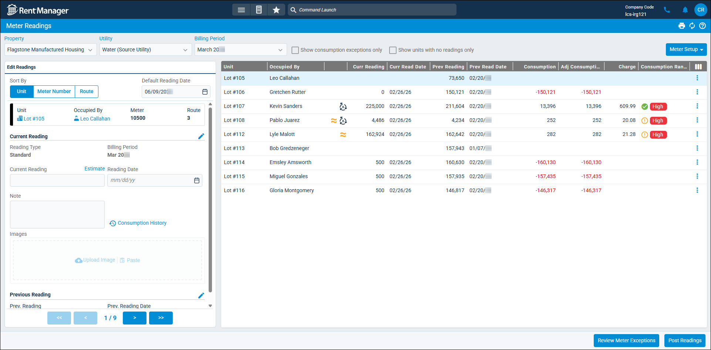

Source: https://rmxhelp.rentmanager.com/Topics/Express/KB/MU-Meter-Readings-Add.htm
Add Meter Readings
With Metered Utilities (MU), you can bill tenants for usage of utilities such as gas, electric, water, and sewer. Every month or billing period, individual meter readings are entered, and utility consumption charges are calculated and billed to the appropriate tenant.
On the Meter Readings page, you can enter meter readings of a selected utility for the units of a selected property, then post those readings.
More Information
Metered Utilities, meter types, and each unit's meter must be set up before you can add meter readings in Rent Manager. For more information, refer to Set Up Metered Utilities.
Related Privileges
| Group | Privilege | Column |
|---|---|---|
| Properties/Units | Properties | View |
| Utilities | Metered utilities | Enabled |
| Utility information | View | |
| Meter types | View | |
| Change current read and date value | Enabled | |
| Change previous read value and date | Enabled |
For more information, refer to Control User Access.
Step 1: Select Units to Add Readings
To start recording meter readings in Rent Manager, do the following:
-
Go to
 arrow_forward Services arrow_forward Metered Utilities arrow_forward Meter Readings.
arrow_forward Services arrow_forward Metered Utilities arrow_forward Meter Readings.
-
In the Property drop-down list, select which property you want to post readings to.
-
At the top of the page, select the Utility you wish you to post readings for. The utilities available in the drop-down list are limited based on the Property selected.
-
In the Billing Period drop-down list, select billing period you wish to post meter readings for. The billing period available in the drop-down list are limited based on the Utility selected.
More Information
In order to Review Meter Exceptions, you must select a single Billing Period. For more information, refer to Meter Exceptions (Page).
-
Optionally, check or uncheck the available filters:
Option Description Show consumption exceptions only
If checked, only units with a Consumption Range marked as an exception from its utility consumption group display in the list. This allows you to quickly find and investigate unusual meter readings. For more information, refer to Manage Metered Utilities High/Low Settings.
Show units with no readings only
If checked, only unit meters that have not yet had a meter reading added in the Current Reading field display in the list.
In the Meter Readings tile, the list of units populates based on your selections.
-
On the Edit Readings tile, select the Sort By method to determine the order in which units display on the Meter Readings tile.
Option Description Unit
Units display in alphanumeric order by unit name.
Meter Number
Units display in alphanumeric order based on their assigned meter number. To display the Meter Number column, click
 .
.Route
Units display in numeric order based on their assigned route number. To display the Route column, click
.
More Information
Only properties to which you have access display. Your access to properties can be managed from your user account or on the property's details page. For more information, refer to Limit Access to a Property.
Step 2: Enter Meter Readings
To add meter readings, do the following:
-
In the Meter Readings tile, select the unit for which you are entering a reading. By default, the first unit in the list is selected.
-
In the Edit Readings tile, enter information into the available fields.
Field Description Current Reading
The utility usage as of the most recent meter reading. If the meter has a pending swap, this field is disabled.
More Information
If meter estimates are enabled, clicking Estimate allows you to Choose an Estimate Method. If reading estimates are not posted successfully due to insufficient funds, Estimate Needed displays and you must manually enter the Est. Consumption for those readings. For more information, refer to Estimate a Metered Utility Reading.
Default Reading Date
The date to be used as the default for current readings. This date populates for each reading by default and can be overridden in the Reading Date field for each posting.
Images
Any images or documents relevant to the reading, such as a photo of the meter. To upload a file, click
 Upload or to paste an image from your clipboard, click
Upload or to paste an image from your clipboard, click  Paste.
Paste.Note
An optional comment providing further information about the reading.
Reading Date
The date on which the most recent meter reading took place. If the meter has a pending swap, this field is disabled.
-
In the Edit Readings tile, review the following fields.
Field Description Adjusted Consumption
If applicable, the utility's usage amount after being adjusted to the unit of measurement used for billing this utility's meter type.
If the Current Reading has an Estimate reading type, this field displays as Est. Adjusted Consumption.
More Information
This amount differs from the amount in the Consumption column only if a Conversion Formula is applied to the meter type's charge options. For more information, refer to MU Plus Details (Page) or Standard Meter Type Details (Page).
Billing Period
The month and year that the meter reading is billed for. If you took the current reading between the first and fifteenth of the month, the current month displays. If you took the current reading on the sixteenth of the month or later, the following month displays.
More Information
For future meter readings, this field automatically populates with the month after the most recent reading.
Charge
The total amount charged for the utility's consumption at the unit for this meter reading period. This is based on the charge settings established for the selected meter type. To view the details on how this charge was calculated, click
 . For more information, refer to Test Utility Charge Calculation.
. For more information, refer to Test Utility Charge Calculation.If the Current Reading has an Estimate reading type, this option is Est. Charge.
Consumption
The amount consumed since the previous reading. To view the history of utility consumption for this unit, click
 . For more information, refer to View Consumption History (Pop-Up).
. For more information, refer to View Consumption History (Pop-Up).The adjusted consumption is determined using the following formula:
Consumption = Current Reading – Previous Reading
If the Current Reading has an Estimate reading type, this field displays as Est. Adjusted Consumption.
More Information
If you are using utility consumption groups to measure high and low consumption values and quickly find exceptions for unusual readings, the Meter Readings tile's Consumption Range column displays and name and color of the range this consumption amount falls in. This allows you to quickly see information such as high usage, low usage, vacant units with usage, and so on, depending on the setup of your consumption groups. For more information, refer to Manage Metered Utilities High/Low Settings.
Reading Type
The category to describe the reading (i.e., Standard, Swap, Off-Cycle, Rollover, Estimated Swap).
Service Issue
If a service issue is associated with a meter swap, a link to the issue displays. For more information, refer to Add an Issue Link.
-
In the Previous Reading section, review the last meter reading date and usage taken prior to this meter reading. If you need to make a correction, click
 .
. -
After entering the readings for this meter, click
 at the bottom to proceed to the next unit, or select a unit from the list in the Meter Readings tile.
at the bottom to proceed to the next unit, or select a unit from the list in the Meter Readings tile. -
Repeat these steps until all meter readings are entered.
Step 3: Post Readings
After adding your meter readings for all units for this property and utility, you can post those readings. If you have a meter exceptions approval workflow, a reviewer must examines the abnormal readings and mark each one with an Exception Reason to explain the unexpected consumption. An approver then analyzes the reviewer's work and either approves it for posting or sends it back to the reviewer for a follow-up. Once each exception is reviewed and approved, your meter readings can be posted. For more information, refer to Meter Exceptions Approval Workflow.
More Information
Alternatively, you can select a new Property and/or Utility at the top and add more meter readings without posting them yet. You can then go to the Post Utilities page and post all your meter readings for all utilities at once in a batch. For more information, refer to Post Utilities.
To post the readings for the property and utility you just added meter readings for, do the following:
-
At the bottom of the Meter Readings tile, click Post Readings.
The Post Utilities pop-up displays. -
Enter information into the available fields:
Field Description Comment
Any additional information that provides further context about the utility posting for these units.
CRE cap overages
For tenants with commercial leases, the calculation method that Rent Manager uses if the utility charge exceeds the commercial recoverable expenses (CRE) cap amount established on the tenant's lease.
Adjust
Adjust the charge amount to not exceed the common area maintenance (CAM) cap.
Allow
Allow the charge to exceed the CAM cap.
Skip
Skip the charge if the amount exceeds the CAM cap.
Create Invoices
Automatically generate invoices for the tenants to pay for their utility charges.
Post Date
The date that the charge posts to the selected tenant accounts.
Post zero charges
Posts utilities that do not have current consumption and calculated charges. The zero amount due is displayed on the tenant statement, even if that tenant is not a consumer of the utility.
Use current meter reading date for charges
Use the date of the most recent meter reading instead of the date in the Post Date field.
Utility Charge Transaction Memo
Any additional information to describe this charge that displays in the description of this transaction on the tenant's account.
-
Click Post Utilities.
The utility charges are posted to the tenant accounts for each unit.